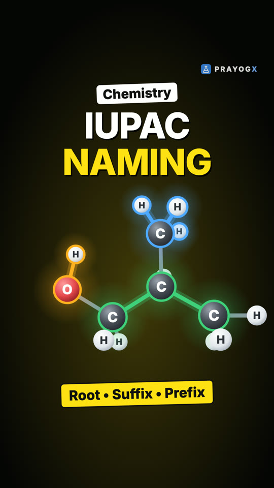

Choose your class
Every subject is laid out chapter by chapter. Each topic has a short Doodle video, notes you can download and a quick quiz.
Class 9Motion, matter, the cell and number systems: the foundations of school science and maths.ScienceMathematics21 videosClass 10Light, electricity, chemical reactions, life processes and the algebra and geometry of board year.ScienceMathematics9 videosClass 11Mechanics, thermodynamics, atomic structure, bonding, functions and the living world.PhysicsChemistryMathematicsBiology16 videosClass 12Electromagnetism, optics, modern physics, solutions and kinetics, calculus and genetics.PhysicsChemistryMathematicsBiology15 videosExtra / SupplementaryCurious questions beyond the syllabus: why the sky is blue, why we yawn, why 0.999… equals 1, and more.ScienceBiologyMathematics11 videos
Newest videos
 Nucleophilic Addition Reactions: One Carbonyl, Five PathwaysEvery nucleophilic addition reaction of aldehydes and ketones in one place: HCN, NaHSO₃, Grignard reagents, alcohols, and the addition–elimination of ammonia derivatives, with the product each one gives.Aldehydes, Ketones and Carboxylic Acids · Chemistry · simulation
Nucleophilic Addition Reactions: One Carbonyl, Five PathwaysEvery nucleophilic addition reaction of aldehydes and ketones in one place: HCN, NaHSO₃, Grignard reagents, alcohols, and the addition–elimination of ammonia derivatives, with the product each one gives.Aldehydes, Ketones and Carboxylic Acids · Chemistry · simulation
IUPAC Naming: Root, Suffix and PrefixHow a chemical name is built from a molecule: the root counts the parent chain's carbons, the suffix gives its bonds and principal group, and the prefix names what is attached.Organic Chemistry – Some Basic Principles and Techniques · Chemistry · simulation Aldehyde or Ketone? The Distinguishing TestsTwo colourless compounds, both with C=O. How Tollens', Fehling's and the iodoform test tell an aldehyde from a ketone, and why they work.Aldehydes, Ketones and Carboxylic Acids · Chemistry · simulation
Aldehyde or Ketone? The Distinguishing TestsTwo colourless compounds, both with C=O. How Tollens', Fehling's and the iodoform test tell an aldehyde from a ketone, and why they work.Aldehydes, Ketones and Carboxylic Acids · Chemistry · simulation Homologous SeriesMethane, ethane, propane, butane: four different compounds, one family. How each member differs from the next by one CH₂ unit, and what that means for their properties.Organic Chemistry – Some Basic Principles and Techniques · Chemistry · simulation
Homologous SeriesMethane, ethane, propane, butane: four different compounds, one family. How each member differs from the next by one CH₂ unit, and what that means for their properties.Organic Chemistry – Some Basic Principles and Techniques · Chemistry · simulation The Cannizzaro ReactionTwo identical aldehyde molecules, two different products. How an aldehyde with no α-hydrogen, in concentrated alkali, is oxidised and reduced in the same reaction.Aldehydes, Ketones and Carboxylic Acids · Chemistry · simulation
The Cannizzaro ReactionTwo identical aldehyde molecules, two different products. How an aldehyde with no α-hydrogen, in concentrated alkali, is oxidised and reduced in the same reaction.Aldehydes, Ketones and Carboxylic Acids · Chemistry · simulation Functional GroupsTwo molecules can share the same carbon chain and still behave differently. How one small group of atoms gives a compound its chemical identity: –OH, –CHO, C=O, –COOH and –NH₂.Organic Chemistry – Some Basic Principles and Techniques · Chemistry · simulation
Functional GroupsTwo molecules can share the same carbon chain and still behave differently. How one small group of atoms gives a compound its chemical identity: –OH, –CHO, C=O, –COOH and –NH₂.Organic Chemistry – Some Basic Principles and Techniques · Chemistry · simulation